Siempre es más fácil conocer las normas ENEL-CODENSA
Rolex Rolex gold watch, compared with ordinary materials, gold watches are often expensive, but the replica rolex gold watch has the role of swiss replica watches hedging, so that it often becomes the first choice for collectors. The gold watch has value in the world, largely because the omega replica watch brand launched a commemorative limited edition watch or a replica hublot complex movement process or artistic attainments deep watches, mostly preferred gold precious metals such material. These watches tend to have a strong hedging function, therefore, Rolex Rolex gold watch reputation.

ET-AT310 Conectores de potencia para subestaciones y líneas de transmisión
Datos adicionales
Número de especificación
ET-AT310
Fecha de vigencia
16/11/2006
Herramientas adicionales
- Contenido Ocultar
- 1. OBJETO
- 2. CONDICIONES DE SERVICIO
- 3. NORMAS DE FABRICACIÓN Y PRUEBAS
- 4. DEFINICIONES
- 5. CARACTERÍSTICAS CONDUCTORES TUBULARES.
- 6. DISEÑO ESTRUCTURAL DE LOS CONECTORES
- 7. TIPOS DE CONECTORES
- 8. GENERALIDADES
- 9. GRASAS
- 10. AUMENTO DE TEMPERATURA
- 11. RESISTENCIA MECÁNICA A LA EXTRACCIÓN
- 12. CANTIDAD Y DIÁMETRO DE PASADORES DE FIJACIÓN DE CONDUCTORES PARA CONECTORES
- 13. ARANDELAS PLANAS CORRIENTES
- 14. RECOMENDACIONES PARA REALIZAR CONEXIONES
- 15. SOPORTES DE MONTAJE
- 16. ENSAYOS
- 17. ROTULADO Y EMBALAJE
- 18. DOCUMENTOS A PRESENTAR EN LA OFERTA
1. OBJETO
Establecer los requisitos generales que debe cumplir el suministro, fabricación, inspección y ensayos de los conectores de potencia para uso en subestaciones eléctricas de alta tensión y líneas de transmisión de CODENSA S.A. ESP.2. CONDICIONES DE SERVICIO
Las condiciones ambientales y eléctricas del sistema son las siguientes:| CARACTERÍSTICAS AMBIENTALES | |
| a. Altura sobre el nivel del mar | 2 650 m |
| b. Ambiente | Tropical |
| c. Temperatura máxima y mínima | 30 ºC y - 10 ºC respectivamente. |
| d. Nivel de humedad | Mayor al 90 % |
| e. Nivel contaminación (IEC 60815) | Medio (II) |
3. NORMAS DE FABRICACIÓN Y PRUEBAS
Todos los materiales, diseño, fabricación, pruebas y ensayos deberán ajustarse a la última revisión de las siguientes normas o de sus equivalentes:| NTC 2155 | Conectores de potencia para subestaciones eléctricas |
| NEMA CC1 | Electrical power conectors for Substations |
Pueden emplearse otras normas internacionalmente reconocidas equivalentes o superiores a las aquí señaladas, siempre y cuando se ajusten a lo solicitado en la presente especificación técnica.
Las normas citadas en la presente especificación o cualquier otra que llegare a ser aceptada por CODENSA S.A., se refieren a su última revisión.
4. DEFINICIONES
Conector de derivación: Es un conector en ángulo que une el conductor de una derivación al conductor principal en un ángulo especificado.Conector en “L”: Un conector en “L” es un conector en ángulo que une los extremos de dos conductores en un ángulo de 90°.
Conector en “T”: Es un conector de derivación que une un conductor derivado al conductor principal en un ángulo de 90°.
5. CARACTERÍSTICAS CONDUCTORES TUBULARES.
Conductor tubular IPS Aluminio| Tamaño nominal. | Diámetro externo | Diámetro interno | Sección | capacidad de corriente admisible | Aleación |
| pulg | pulg/mm | pulg/mm | mm2 | A | |
| 1 ¼ | 1,66 / 42,2 | 1,38 / 34,7 | 447,6 | 810 | 6063 T6 |
| 1 ½ | 1,90 / 48,3 | 1,61 / 40,6 | 532,1 | 930 | 6063 T6 |
Conductor tubular Cobre U.S. ASTM
| nominal | Diámetro externo | Diámetro interno | Sección | capacidad de corriente admisible |
| pulg | pulg/mm | pulg/mm | mm2 | A |
| 1 ¼ | 1,66 / 42,2 | 1,38 / 34,7 | 447,6 | 1 130 |
| 1 ½ | 1,90 / 48,3 | 1,61 / 40,6 | 532,1 | 1 285 |
6. DISEÑO ESTRUCTURAL DE LOS CONECTORES
Algunos principios básicos de diseño de aplicación general para todo tipo de conectores son:- La parte superior del cuerpo del conector se compone de diferentes secciones atornilladas, este tipo de construcción permite distribuir de manera uniforme las fuerzas de compresión sobre los elementos interconectados cuando el conector está cerrado.
- Los tornillos deben estar lo más cerca posible al conductor o tubo.
- El diámetro y número de tornillos debe producir la presión de contacto requerida para cada diseño en particular.
- Las aleaciones usadas deben ser lo suficientemente fuertes para soportar la presión de los tornillos y lo suficientemente dúctiles para ejercer una acción envolvente sobre el conductor de manera que se obtenga una eficiente transferencia de corriente.
7. TIPOS DE CONECTORES
La presente especificación contempla conectores para los siguientes tipos de conexiones:- Cable a cable
- Tubo a tubo
- Tubo a cable
- Cable a borna (bullón)
- Tubo a pasador (bullón)
- Cable a soporte de aislador
- Tubo a soporte de aislador.
Conector de ranuras paralelas
Se utilizan para derivar o conectar conductores de aluminio o cobre (según corresponda). Se debe respetar el par de apriete recomendado por el fabricante para evitar aflojamiento o daño de los conductores. Ver Figura 1.
8. GENERALIDADES
Los conectores serán del tipo atornillable con apriete independiente en cada lado con el objeto de permitir su fácil instalación y desmontaje sin necesidad de herramientas especiales.Las dimensiones deberán corresponder perfectamente con las dimensiones de los conductores y terminales entre los que se efectúa la conexión.
Los tornillos deberán garantizar una distribución uniforme y constante de la presión en los conectores para cualquier temperatura a la que se encuentren (dentro del rango normal de operación).
Una vez aplicado el par correspondiente sobre el conector, el tornillo debe salir como mínimo dos hilos por encima de la tuerca.
Con cada pieza se debe suministrar la tornillería completa. Para cada unión atornillada se dispondrá de dos arandelas planas, una de presión y una tuerca.
Las piezas de conexión no deberán dañar las características mecánicas del conductor.
Las uniones bimetálicas Aluminio-Cobre serán del tipo “ánodo masivo”, masas de aleación de aluminio que al producirse el ataque galvánico metalizan el aluminio desprendido sobre el cobre deteniendo el proceso.
9. GRASAS
En su propuesta, el fabricante deberá indicar el tipo de grasa a utilizar y la cantidad necesaria por pieza.Se utilizarán grasas de contacto, con las siguientes características mínimas:
- Contenido de zinc superior al 30%
- Punto de goteo superior a 150°C
- Estable con el tiempo, sin afectación por agentes ambientales o corrosivos.
- Ser inocuas al contacto con la piel
10. AUMENTO DE TEMPERATURA
- El aumento de temperatura de un conector eléctrico de potencia no debe exceder el aumento de temperatura del conductor con el cual debe utilizarse.
- El aumento de temperatura de un conector eléctrico de potencia que una conductores de calibres diferentes, no debe exceder el aumento de temperatura del conductor que tenga el aumento mayor.
11. RESISTENCIA MECÁNICA A LA EXTRACCIÓN
La resistencia a la extracción de los dispositivos de fijación de un conector, debe ser la siguiente:| Calibre del conductor | Resistencia mecánica mínima a la extracción (kg) | |
| AWG/MCM | mm | |
| 6 – 1/0 | 13 – 54 | 136 |
| 2/0 – 4/0 | 67 – 107 | 227 |
| 250 – 500 | 127 – 253 | 454 |
| Mayor de 500 | Mayor de 253 | 907 |
12. CANTIDAD Y DIÁMETRO DE PASADORES DE FIJACIÓN DE CONDUCTORES PARA CONECTORES
La cantidad y diámetro de los pasadores de fijación de conductores para conectores están indicados en la tabla del Anexo 1, para diferentes calibres de conductores y diámetros de tubos y bornas.Todo tornillo en U se cuenta como si fueran dos tornillos.
Cuando se emplean dos tamaños diferentes de conductores, se permite el uso de los tornillos especificados para el conductor más pequeño.
Cuando se especifican tres tornillos, se aplica la siguiente excepción: los ojetes del terminal deben contar con mínimo cuatro tornillos o el equivalente para un conductor sencillo.
Los tornillos de aleaciones de bronce deben presentar una resistencia a la extracción mínima de 70 000 lb/pulg2 y los de aleación de aluminio deben presentar una resistencia a la extracción mínima de 55 000 lb/pulg2.
Los tornillos de aleaciones de bronce deben emplearse en conectores de aleación de cobre y los de aleación de aluminio en conductores de aleación de aluminio. Se permite alternar los materiales de la aleación que se emplean en los tornillos siempre y cuando se cumpla con los requisitos de desempeño.
También se pueden utilizar tornillos de acero inoxidable o galvanizados en caliente. Estos tornillos eliminan problemas de corrosión que podrían presentarse y dado que el acero es mal conductor de electricidad, evitan que se formen trayectorias cerradas de corriente disminuyendo así las pérdidas en el conector por corrientes parásitas.
Las características nominales de torsión para los diferentes tipos de tornillos se presentan a continuación:
| Diámetro de los tornillos | Características nominales de torsión | |||
| Pulgadas | mm | lb.pie | lb.pulgada | N.m |
| 3/8 SB | 9,5 | 20 | 240 | 27,1 |
| ½ SB | 12,7 | 40 | 480 | 54,2 |
| 5/8 SB | 15,9 | 55 | 660 | 74,6 |
| 3/8 L-A | 9,5 | 14 | 168 | 19 |
| ½ L-A | 12,7 | 25 | 300 | 33,9 |
| 5/8 L-A | 15,9 | 40 | 480 | 54,2 |
| 5/16” A | 7,9 | 14,75 | 177 | 20 |
| 3/8” A | 9,5 | 28 | 336 | 38 |
| ½” A | 12,7 | 48 | 575 | 65 |
L-A: Aluminio lubricado
SB: Silicona bronce
A: Acero
13. ARANDELAS PLANAS CORRIENTES
El tamaño de las arandelas planas (corrientes), de silicona-bronce, aluminio o acero, previstas para usar con pasadores de 3/8”, ½” y 5/8” para unir conectores eléctricos de potencia a superficies de contacto planas deben ser:| Tamaño del perno | Tamaño de la arandela pulg (mm) | |||
| Pulgadas | mm | Diámetro interior | Diámetro exterior | |
| Mínimo | Máximo | |||
| 3/8 | 9,5 | 13/32 (10,3) | 7/16 (11,1) | 7/8 (22,2) |
| ½ | 12,7 | 17/32 (13,5) | 9/16 (14,2) | 1 ¼ (31,7) |
| 5/8 | 15,9 | 21/32 (16,7) | 11/16 (17,4) | 1 ½ (38,1) |
14. RECOMENDACIONES PARA REALIZAR CONEXIONES
Las superficies del conector y del conductor deben limpiarse vigorosamente con un cepillo de alambre o tela esmeril. Se necesita una superficie lustrosa y brillante. Se debe aplicar una mezcla de contacto inmediatamente después del limpiado del aluminio.Algunos conectores están recubiertos con otros metales, las superficies de estos conectores deben rasparse hasta remover parte del recubrimiento. Deben limpiarse con un solvente si es necesario.
Puesto que es el aluminio el que corroe en una celda eléctrica cobre-aluminio, no deben usarse cables o tubos de aluminio con conectores de cobre sin recubrimiento. En el caso inverso (conductor de cobre y conector de aluminio) si es aceptable funcionalmente siempre que se estipule que el conector de aluminio tenga mayor masa en comparación con la del conductor de cobre (ánodo masivo).
Una precaución al hacer cualquier unión cobre a aluminio tiene que ver con las posiciones relativas de los conductores de cobre y aluminio. Las sales de cobre atacan al aluminio mientras que las sales de aluminio no atacan al cobre. Por esto, lo mejor es instalar en la medida de lo posible, los conductores de aluminio por encima de los de cobre. Esto previene el lavado de las sales de cobre sobre el aluminio.
Los conectores de aluminio plateados no deben usarse en barras de aluminio sin recubrimiento.
15. SOPORTES DE MONTAJE
Cuando se use un conector de aluminio para hacer la conexión a una pala de cobre, se sugiere utilizar tornillos, tuercas y arandelas de bronce recubiertos de silicon o de acero inoxidable. Pueden usarse otros materiales adecuados procurando que cumplan el numeral anterior correspondiente a la corrosión galvánica.Con herrajes de acero, deben usarse arandelas de presión para compensar los diferentes coeficientes térmicos de expansión entre metales diferentes y la fluencia del aluminio. No se recomiendan herrajes de aluminio en una conexión de cobre bajo las condiciones de corrosión originadas por efecto de las sales de cobre en el lado inferior de la conexión.
16. ENSAYOS
Ensayos tipoPara la aceptación de los conectores, será necesario presentar protocolos de las siguientes pruebas tipo:
Ensayo de Aumento de Temperatura
Los ensayos de aumento de temperatura en conectores deben realizarse ya sea en interiores o en exteriores. El aumento de temperatura debe determinarse a 100%, 125% y 150% de la corriente nominal con temperaturas equilibradas, obtenidas en cada nivel. El equilibrio de temperatura se define como la temperatura constante (variación de 1° máximo) entre tres medidas sucesivas. Las medidas se hacen al final de los primeros 30 minutos con intervalos de 1 hora hasta la terminación del ensayo. Los valores de corrientes usados se basan en las capacidades nominales de corriente de los conductores.
Los conductores del calibre y tipo correcto deben prolongarse 1,2 m de cada abertura del conector al punto de conexión al circuito para eliminar cavidades de calor o puntos calientes en el anillo de ensayo.
Los valores de corriente a usar para este ensayo para los diferentes tipos de conectores deben determinarse de acuerdo a lo siguiente:
- Conectores terminales: El valor de corriente debe seleccionarse como el menor valor entre el valor nominal del equipo al cual se une el conector y el valor nominal del conductor para el cual se diseña la abertura.
- Conectores en ángulo y rectos: El valor de corriente debe seleccionarse con base en el conductor que tenga el valor mas bajo para conducción de corriente cuando las aberturas son de dos calibres y con base en el conductor que es común a ambas aberturas cuando éstas son del mismo calibre.
- Conectores en “T”: Los valores de corriente deben seleccionarse con base en la corriente nominal total en el conductor de la derivación o en el principal si éste es el más pequeño.
Ensayos de resistencia mecánica a la extracción
Los ensayos de resistencia a la extracción de los dispositivos de fijación del conector, deben hacerse con conductores de ambos calibres, el máximo y el mínimo, de aluminio o cobre, según se empleen para cada conector en particular. El conector debe fijarse al conductor y se deben apretar los tornillos de fijación de acuerdo con la recomendación del fabricante. La carga debe aplicarse entre las mordazas a una velocidad que no exceda ¼” por minuto por pie de longitud.
Ensayo de efecto corona y tensión de radioinfluencia (RIV)
Los conectores deben ensayarse mientras se ensamblan con el conductor sobre el cual deben usarse. Se permite sustituir los tubos de dimensiones equivalentes por conductores cableados. El conector y el conductor a ensayar deben estar limpios, secos y nuevos.
Se permite realizar los ensayos bajo condiciones monofásicas pero debe corregirse el valor nominal del conector en la fase central de la condición trifásica. Para esto se debe seguir el procedimiento indicado en el Numeral 3.3.2 de la NTC 2155.
Las observaciones del efecto corona visual deben hacerse en un área oscura después de que el ojo se haya adaptado. Pueden usarse binoculares para observar el efecto. Las observaciones deben limitarse a la presencia o ausencia de efecto corona positivo ya que este es quien contribuye al ruido en forma significativa. Debe aplicarse una sobretensión del 30% para establecer el sitio crítico del efecto corona, si lo hay. Debe observarse la tensión de extinción del efecto corona a medida que disminuye la tensión.
Las medidas de tensión de radio influencia deben efectuarse de acuerdo con la NEMA No. 107-1987. Se pueden omitir estas medidas si la configuración del ensayo permite la observación visual completa y se han identificado todas las fuentes del efecto corona.
El nivel de radio interferencia (RIV) no debe superar los 400 µV entre 0,5 y 2 MHz.
Ensayo de flexión
Este ensayo se debe realizar a todas las piezas previstas para conexión a tubo, así como las piezas de soporte de barras y las de conexiones a bornas de equipos.
El ensayo consiste en someter el conector a la carga de ensayo en dirección horizontal y vertical en el plano perpendicular al eje longitudinal del conductor. La carga de ensayo se aplicará sobre el conductor los mas cerca posible al conector a ambos lados de este y de forma simétrica.
El ensayo se considerará satisfactorio si no se aprecian deformaciones o fisuras en el conector.
Ensayo de apriete de tornillería
Este ensayo se realizará sobre todos los tipos de conectores.
Consiste en aplicar sobre la tornillería del conector un par de apriete superior en un 25% al par nominal. Para esto se montará el conductor sobre la pieza y se fijará la pieza sobre una bancada en el caso de piezas soporte o se atornillará a una pieza semejante en el caso de piezas de conexión.
Se someterán al par de apriete de ensayo a todos los tornillos de la pieza simultáneamente. Para esto se apretarán todos los tornillos alternativamente con incrementos de par de 10 N.m.
Se debe comprobar mediante inspección visual que la pieza no ha sufrido ningún daño como fisuras o deformaciones permanentes.
ensayos de recepción
Se realizarán los siguientes ensayos de recepción:
- Inspección visual del grado de acabado de superficie
- Comprobación de medidas de acuerdo a planos
- Comprobación del par de apriete indicado en planos
Estos ensayos se realizarán por muestreo en cada tipo de conector.
17. ROTULADO Y EMBALAJE
En cada conector debe indicarse como mínimo la siguiente información:- Nombre del fabricante
- Calibre máximo o rango de calibres de los conductores con los cuales se ha previsto usar el conector.
Para el embalaje de los conectores se deberán cumplir los siguientes requisitos:
- Se protegerán las zonas de contacto eléctrico que pudieran dañarse.
- Cada pieza dentro de un mismo embalaje irá dentro de una bolsa de plástico o caja de cartón. Se utilizará material de relleno para evitar que las piezas se golpeen entre sí.
- Las superficies de contacto eléctrico que hayan sido mecanizadas serán engrasadas en fábrica.
18. DOCUMENTOS A PRESENTAR EN LA OFERTA
El oferente deberá presentar para cada tipo de conector ofertado la siguiente información:- Copia de los protocolos de los ensayos tipo (indicando fecha y laboratorio)
- Valores nominales
- Lista de los materiales a emplear (aleaciones y tornillería)
- Planos de dimensiones generales de la pieza
- Características y tipo de grasa a emplear
- Excepciones a la presente especificación, debidamente justificadas.
FIGURA 1. CONECTOR DE RANURAS PARALELAS

| Tipo | Material conector | Material Tornillos | Número de Tornillos | Tipo de Conductor | Calibre principal | Diámetro | Calibre secundario | Diámetro |
| mm | mm | |||||||
| 1 | Aleación de aluminio | Acero galvanizado en caliente | 3 – 4 | Aluminio ACSR | 605 MCM | 24,2 mm | 605 MCM | 24,2 mm |
| 2 | Aleación de aluminio | Acero galvanizado en caliente | 3 – 4 | Aluminio ACSR | 1113 MCM | 31,9 mm | 1113 MCM | 31,9 mm |
| 3 | Aleación de aluminio | Acero galvanizado en caliente | 3 – 4 | Aluminio ACSR | 4/0 AWG | 16,3 mm | 4/0 AWG | 16,3 mm |
| 4 | Aleación de aluminio | Acero galvanizado en caliente | 3 – 4 | Aluminio ACSR | 336,4 MCM | 18,3 mm | 336,4 MCM | 18,3 mm |
| 5 | Aleación de aluminio | Acero galvanizado en caliente | 3 – 4 | Aluminio ACSR | 266.8 MCM | 16,3 mm | 266,8 MCM | 16,3 mm |
FIGURA 2. CONECTOR RECTO DE BORNA(BULLÓN) A TUBO

| Tipo | Material conector | * Material tornillos | Número de Tornillos | Diámetro borna (bullon) mm (B) | Diámetro tubo * |
| pulg/mm (A) | |||||
| 1 | Bimetálico* | Acero galvanizado en caliente | 8 | 30 | 1 ¼ / 42,2 |
| 2 | Bimetálico* | Acero galvanizado en caliente | 8 | 40 | 1 ½ / 48,3 |
Entendiéndose por “bimetálico”, que permita la conexión indistintamente AL-AL o AL-CU sin que se presente corrosión galvánica. (Ver numerales 7 y 13)
FIGURA 3. CONECTOR DE SOPORTE FIJO PARA TUBO PASANTE

| Tipo | Material | Material tubo pasante | Diámetro tubo (pulg) | Tipo aislador | |
| Diámetro interno | Diámetro externo | ||||
| 1 | Bimetálico* | Aluminio/Cobre | 1 ¼ | 76 | 108 |
| 2 | Bimetálico* | Aluminio/Cobre | 1 ½ | 76 | 108 |
| 3 | Bimetálico* | Aluminio/Cobre | 2 ½ | 76 | 108 |
| 4 | Bimetálico* | ACSR | 605 MCM | 76 | 108 |
Entendiéndose por “bimetálico”, que permita la conexión indistintamente AL-AL o AL-CU sin que se presente corrosión galvánica. (Ver numerales 7 y 13)
FIGURA 4. CONECTOR DERIVACIÓN EN T DE TUBO A TUBO

| Tipo | Material conector | Material tubo pasante | Diámetro tubo pasante (pulg/mm) | Material tubo derivación | Diámetro tubo derivación (pulg/mm) |
| 1 | Bronce | Cobre | 1 ½ / 48,3 | Cobre | 1 ½ / 48,3 |
| 2 | Bronce | Cobre | 1 ¼ / 42,16 | Cobre | 1 ¼ / 42.16 |
| 3 | Aleación de Aluminio | Aluminio | 1 ½ / 48,3 | Aluminio | 1 ½ / 48,3 |
| 4 | Aleación de Aluminio | Aluminio | 1 ¼ / 42,16 | Aluminio | 1 ¼ / 42,16 |
| 5 | Bimetálico* | Aluminio/Cobre | 1 ½ / 48,3 | Aluminio/Cobre | 1 ½ / 48,3 |
| 6 | Bimetálico* | Aluminio/Cobre | 1 ¼ / 42,16 | Aluminio/Cobre | 1 ¼ / 42,16 |
Entendiéndose por “bimetálico”, que permita la conexión indistintamente AL-AL o AL-CU sin que se presente corrosión galvánica. (Ver numerales 7 y 13).
FIGURA 5. CONECTOR DERIVACIÓN EN T DE TUBO PASANTE A CABLE DERIVADO

| Tipo | Material conector | Material tubo pasante | Diámetro tubo pasante (pulg/mm) | Material Cable derivación | Calibre cable derivación AWG – MCM | Diámetro cable (mm) |
| 1 | Aleación de Aluminio | Aluminio | 1 ½ / 48,3 | ACSR | 605 | 24,2 |
| 2 | Aleación de Aluminio | Aluminio | 1 ¼ / 42,16 | ACSR | 605 | 24,2 |
| 3 | Bimetálico | Cobre | 1 ½ / 48,3 | ACSR | 605 | 24,2 |
| 4 | Bimetálico | Cobre | 1 ¼ / 42,16 | ACSR | 605 | 24,2 |
| 5 | Bimetálico | Aluminio | 1 ½ / 48,3 | Cobre | 2/0 – 4/0 | 15 |
| 6 | Bimetálico | Aluminio | 1 ¼ / 42,16 | Cobre | 2/0 – 4/0 | 15 |
| 7 | Bimetálico | Aluminio/Cobre | 2 ½ | ACSR | 605 | 24.2 |
Entendiéndose por “bimetálico”, que permita la conexión indistintamente AL-AL o AL-CU sin que se presente corrosión galvánica. (Ver numerales 7 y 13).
FIGURA 6. CONECTOR DERIVACIÓN EN T DE CABLE PASANTE A CABLE DERIVADO

| Tipo | Material conector | Material cable pasante | Calibre cable pasante AWG – MCM | Diámetro cable (mm) | Material cable derivación | Calibre cable derivación AWG – MCM | Diámetro cable (mm) |
| 1 | Aleación de Aluminio | ACSR | 605 | 24,2 | ACSR | 605 | 24,2 |
| 2 | Aleación de Aluminio | ACSR | 1113 | 31,98 | ACSR | 605 | 24,2 |
| 3 | Bimetalico* | Cu | 450 | 20.1 | ACSR | 605 | 24,2 |
Entendiéndose por “bimetálico”, que permita la conexión indistintamente AL-AL o AL-CU sin que se presente corrosión galvánica. (Ver numerales 7 y 13).
FIGURA 7. CONECTOR ACODADO 90° DE CABLE DUPLEX A CABLE

| Tipo | Material conector | Material cable pasante | Calibre cable duplex AWG – MCM | Diámetro cable (mm) | Material cable derivación | Calibre cable derivación AWG – MCM | Diámetro cable (mm) |
| 1 | Aleación de Aluminio | ACSR | 605 | 24,2 | ACSR | 605 | 24,2 |
| 2 | Aleación de Aluminio | ACSR | 1113 | 31,98 | ACSR | 605 | 24,2 |
| 3 | Aleación de Aluminio | ACSR | 1113 | 31,98 | ACSR | 1113 | 31,98 |
FIGURA 8. CONECTOR DERIVACIÓN EN T TUBO PASANTE A PLATINA

| Tipo | Material conector | Material tubo pasante | Diámetro bominal tubo (pulg/mm) |
| 1 | Bimetálico* | Aluminio/Cobre | 1 ½ / 48,3 |
| 2 | Bimetálico* | Aluminio/Cobre | 1 ¼ / 42,16 |
Entendiéndose por “bimetálico”, que permita la conexión indistintamente AL-AL o AL-CU sin que se presente corrosión galvánica. (Ver numerales 7 y 13).
FIGURA 9. CONECTOR A 90° DE BORNA (BULLÓN) A TUBO

| Tipo | Material conector | * Material tornillos | Número de Tornillos | Diámetro borna (bullon) mm (B) | Diámetro tubo * |
| pulg/mm (A) | |||||
| 1 | Bimetálico* | Acero galvanizado en caliente | 8 | 30 | 1 ¼ / 42,2 |
| 2 | Bimetálico* | Acero galvanizado en caliente | 8 | 40 | 1 ½ / 48,3 |
Entendiéndose por “bimetálico”, que permita la conexión indistintamente AL-AL o AL-CU sin que se presente corrosión galvánica. (Ver numerales 7 y 13).
FIGURA 10. CONECTOR RECTO DE PLATINA LISA A CABLE/BULÓN

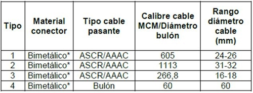
Entendiéndose por “bimetálico”, que permita la conexión indistintamente AL-AL o AL-CU sin que se presente corrosión galvánica. (Ver numerales 7 y 13).
FIGURA 11. CONECTOR RECTO DE BORNA (BULLÓN) A CABLE

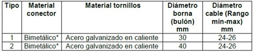
Entendiéndose por “bimetálico”, que permita la conexión indistintamente AL-AL o AL-CU sin que se presente corrosión galvánica. (Ver numerales 7 y 13).
FIGURA 12. CONECTOR RECTO DE TUBO PASANTE A CABLE DERIVADO

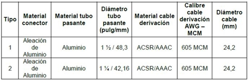
FIGURA 13. CONECTOR RECTO DE TUBO A PLATINA LISA

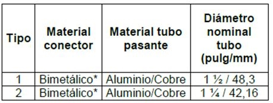
Entendiéndose por “bimetálico”, que permita la conexión indistintamente AL-AL o AL-CU sin que se presente corrosión galvánica. (Ver numerales 7 y 13).
FIGURA 14. CONECTOR DERIVACIÓN EN T DE BORNA (BULÓN) A CABLE

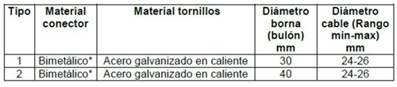
FIGURA 15. CONECTOR A 90° DE BORNA (BULLÓN) A CABLE/BULÓN

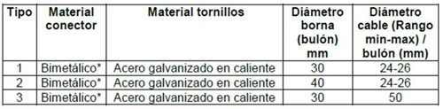
Entendiéndose por “bimetálico”, que permita la conexión indistintamente AL-AL o AL-CU sin que se presente corrosión galvánica. (Ver numerales 7 y 13).
FIGURA 16. CONECTOR A 90° DE CABLE A PLATINA LISA

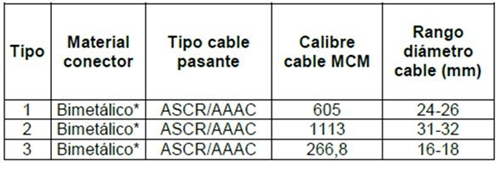
Entendiéndose por “bimetálico”, que permita la conexión indistintamente AL-AL o AL-CU sin que se presente corrosión galvánica. (Ver numerales 7 y 13).
FIGURA 17. GRAPA DE PUESTA A TIERRA PARA CABLES

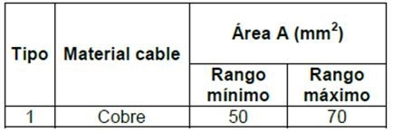
FIGURA 18. CONECTOR DE COMPRESIÓN TIPO PALA

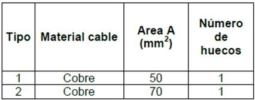
FIGURA 19. SEPARADOR PARA CABLES

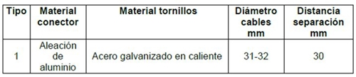
FIGURA 20. CONECTOR UNIVERSAL RECTO/DERIVACIÓN DE BORNA (BULÓN) A CABLE

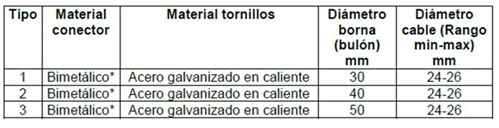
Entendiéndose por “bimetálico”, que permita la conexión indistintamente AL-AL o AL-CU sin que se presente corrosión galvánica. (Ver numerales 7 y 13).
FIGURA 21. CONECTOR DERIVACIÓN EN T DE CABLE PASANTE A PLATINA LISA

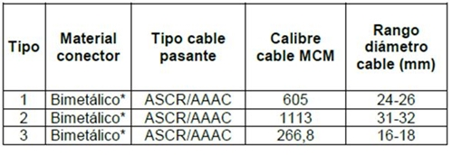
Entendiéndose por “bimetálico”, que permita la conexión indistintamente AL-AL o AL-CU sin que se presente corrosión galvánica. (Ver numerales 7 y 13).
FIGURA 22. CONECTOR DE EXPANSIÓN TIPO TUBO A TUBO CON SOPORTE FIJO A AISLADOR

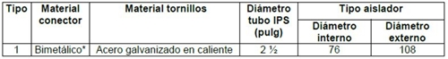
Entendiéndose por “bimetálico”, que permita la conexión indistintamente AL-AL o AL-CU sin que se presente corrosión galvánica. (Ver numerales 7 y 13).
ANEXO 1.
TORNILLOS DE CONEXIÓN PARA CONECTORES
| Clase de conductor | Para conductores de cobre | Para conductores de aluminio o ACSR | |||||||||||
| Diámetro normalizado del tubo | cable de cobre | cable ACSR o de Aluminio | Diámetro de borna (bullón) | Tamaño único trabajo regular | Tamaño único trabajo pesado | Rangos | Rangos | Tamaño único | |||||
| Diámetro exterior | Tornillos por conductor | Tornillos por conductor | Tornillos por conductor | Tornillos por conductor | Tornillos por conductor | ||||||||
| pulg | AWG o MCM | (pulg/mm) | pulg/mm | Número | Diámetro (pulg) | Número | Diámetro (pulg) | Número | Diámetro (pulg) | Número | Diámetro (pulg) | Número | Diámetro (pulg) |
| 1/8 | 4 a 2/0 | 0.2 a 0.399/5,08 a 10,1 | ½ /12,7 | 2 | 3/8 | 3 | 3/8 | 4 | 3/8 | 2 | ½ | 2 | ½ |
| ½ | 3/0 a 500 | ... | 5/8 a 1 1/8 / 15,9 a 28,6 | 3 | 3/8 | 3 | ½ | 4 | 3/8 | 4 | ½ | 4 | ½ |
| ¾ hasta 1 | 550 a 800 | ... | ... | 3 | 3/8 | 4 | ½ | 4 | ½ | 4 | ½ | 4 | ½ |
| 1 ¼ hasta 2 | 900 a 2 000 | 0,4 a 1,41/10,2 a 35,9 | 1 ¼ a 2 ½ / 31,8 a 63,5 | 3 | ½ | 4 | ½ | 4 | ½ | 4 | ½ | 4 | ½ |
| 2 ½ | 900 a 2 000 | 0,4 a 1,41/10,2 a 35,9 | ... | 3 | ½ | 4 | ½ | 4 | ½ | 4 | ½ | 4 | ½ |
| 3 hasta 4 | 2 250 a 3 000 | 1,4 a 1,85/35,9 a 47 | 2 ¾ a 5 / 69,8 a 127,0 | 3 | 5/8 | 4 | 5/8 | 4 | 5/8 | 4 | 5/8 | 4 | 5/8 |
| 4 ½ hasta 6 | ... | ... | ... | ... | ... | ... | ... | ... | ... | ... | ... | 6 | 5/8 |
- Aplica solo para cables
ANEXO 2.
TABLAS DE CARACTERÍSTICAS TÉCNICAS GARANTIZADAS
Tabla A.2.1. CONECTOR DE RANURAS PARALELAS
| Ítem | Descripción | Unidad | Solicitado | Ofertado |
| 1 | Fabricante | |||
| 2 | Referencia/Modelo | |||
| 3 | Tipo (según figura 1) | |||
| 4 | Dimensiones (según figura 1) | |||
| 4.1 | A | Mm | ||
| 4.2 | B | Mm | ||
| 4.3 | C | Mm | ||
| 4.4 | D | Mm | ||
| 5 | Conductor principal | |||
| 5.1 | Material | |||
| 5.2 | Calibre | AWG/MCM/mm2 | ||
| 5.3 | Diámetro | Mm | ||
| 6 | Conductor principal | |||
| 6.1 | Material | |||
| 6.2 | Calibre | AWG/MCM/mm2 | ||
| 6.3 | Diámetro | Mm | ||
| 7 | Material conector | |||
| 8 | Tornillos | |||
| 8.1 | Número de tornillos | Un | ||
| 8.2 | Material | |||
| 8.3 | Par de apriete recomendado | N.m |
Tabla A.2.2. CONECTOR RECTO DE BORNA (BULLÓN) A TUBO
| Ítem | Descripción | Unidad | Solicitado | Ofertado |
| 1 | Fabricante | |||
| 2 | Referencia/Modelo | |||
| 3 | Tipo (según figura 2) | |||
| 4 | Dimensiones (según figura 2) | |||
| 4.1 | A | mm | ||
| 4.2 | B | mm | ||
| 4.3 | C | mm | ||
| 4.4 | D | mm | ||
| 4.5 | E | mm | ||
| 5 | Tubo | |||
| 5.1 | Material | |||
| 5.2 | Diámetro | mm | ||
| 6 | Borna (bullón) | |||
| 6.1 | Material | |||
| 6.2 | Diámetro | mm | ||
| 7 | Material conector | |||
| 8 | Tornillos | |||
| 8.1 | Número de tornillos | Un | ||
| 8.2 | Material | |||
| 8.3 | Diámetro tornillos | Pulg | ||
| 8.4 | Par de apriete recomendado | N.m |
Tabla A.2.3. CONECTOR DE SOPORTE FIJO PARA TUBO PASANTE
| Ítem | Descripción | Unidad | Solicitado | Ofertado |
| 1 | Fabricante | |||
| 2 | Referencia/Modelo | |||
| 3 | Tipo (según figura 3) | |||
| 4 | Dimensiones (según figura 3) | |||
| 4.1 | A | mm | ||
| 4.2 | B | mm | ||
| 4.3 | C | mm | ||
| 5 | Tubo | |||
| 5.1 | Material | |||
| 5.2 | Diámetro | mm | ||
| 6 | Tipo aislador | |||
| 6.1 | Diámetro interno | mm | ||
| 6.2 | Diámetro externo | mm | ||
| 7 | Material conector | |||
| 8 | Tornillos | |||
| 8.1 | Número de tornillos | Un | ||
| 8.2 | Material | |||
| 8.3 | Diámetro tornillos | Pulg | ||
| 8.4 | Par de apriete recomendado | N.m |
Tabla A.2.4 CONECTOR DE SOPORTE FIJO PARA TUBO PASANTE
| Ítem | Descripción | Unidad | Solicitado | Ofertado |
| 1 | Fabricante | |||
| 2 | Referencia/Modelo | |||
| 3 | Tipo (según figura 4) | |||
| 4 | Dimensiones (según figura 4) | |||
| 4.1 | A | mm | ||
| 4.2 | B | mm | ||
| 4.3 | C | mm | ||
| 5 | Tubo | |||
| 5.1 | Material | |||
| 5.2 | Diámetro | mm | ||
| 6 | Tipo aislador | |||
| 6.1 | Diámetro interno | mm | ||
| 6.2 | Diámetro externo | mm | ||
| 7 | Material conector | |||
| 8 | Tornillos | |||
| 8.1 | Número de tornillos | Un | ||
| 8.2 | Material | |||
| 8.3 | Diámetro tornillos | Pulg | ||
| 8.4 | Par de apriete recomendado | N.m |
Tabla A.2.5 CONECTOR DERIVACIÓN EN T DE TUBO PASANTE A CABLE DERIVADO
| Ítem | Descripción | Unidad | Solicitado | Ofertado |
| 1 | Fabricante | |||
| 2 | Referencia/Modelo | |||
| 3 | Tipo (según figura 5) | |||
| 4 | Dimensiones (según figura 5) | |||
| 4.1 | A | mm | ||
| 4.2 | B | mm | ||
| 4.3 | C | mm | ||
| 4.4 | D | mm | ||
| 4.5 | E | mm | ||
| 5 | Tubo pasante | |||
| 5.1 | Material | |||
| 5.2 | Diámetro | mm | ||
| 6 | cable derivado | |||
| 6.1 | Tipo cable | |||
| 6.2 | Calibre | AWG/MCM/mm2 | ||
| 6.3 | Diámetro | mm | ||
| 7 | Material conector | |||
| 8 | Tornillos | |||
| 8.1 | Número de tornillos | Un | ||
| 8.2 | Material | |||
| 8.3 | Diámetro tornillos | Pulg | ||
| 8.4 | Par de apriete recomendado | N.m |
Tabla A.2.6 CONECTOR DERIVACIÓN EN T DE CABLE PASANTE A CABLE DERIVADO
| Ítem | Descripción | Unidad | Solicitado | Ofertado |
| 1 | Fabricante | |||
| 2 | Referencia/Modelo | |||
| 3 | Tipo (según figura 6) | |||
| 4 | Dimensiones (según figura 6) | |||
| 4.1 | A | mm | ||
| 4.2 | B | mm | ||
| 4.3 | C | mm | ||
| 4.4 | D | mm | ||
| 4.5 | E | mm | ||
| 5 | cable pasante | |||
| 5.1 | Tipo cable | |||
| 5.2 | Calibre | AWG/MCM/mm2 | ||
| 5.3 | Diámetro | mm | ||
| 6 | cable derivado | |||
| 6.1 | Tipo cable | |||
| 6.2 | Calibre | AWG/MCM/mm2 | ||
| 6.3 | Diámetro | mm | ||
| 7 | Material conector | |||
| 8 | Tornillos | |||
| 8.1 | Número de tornillos | Un | ||
| 8.2 | Material | |||
| 8.3 | Diámetro tornillos | Pulg | ||
| 8.4 | Par de apriete recomendado | N.m |
Tabla A.2.7 CONECTOR ACODADO 90° DE CABLE DUPLEX A CABLE
| Ítem | Descripción | Unidad | Solicitado | Ofertado |
| 1 | Fabricante | |||
| 2 | Referencia/Modelo | |||
| 3 | Tipo (según figura 7) | |||
| 4 | Dimensiones (según figura 7) | |||
| 4.1 | A | mm | ||
| 4.2 | B | mm | ||
| 4.3 | C | mm | ||
| 4.4 | D | mm | ||
| 4.5 | E | mm | ||
| 5 | cable pasante | |||
| 5.1 | Tipo cable | |||
| 5.2 | Calibre cable duplex | AWG/MCM/mm2 | ||
| 5.3 | Diámetro | mm | ||
| 6 | cable derivado | |||
| 6.1 | Tipo cable | |||
| 6.2 | Calibre | AWG/MCM/mm2 | ||
| 6.3 | Diámetro | mm | ||
| 7 | Material conector | |||
| 8 | Tornillos | |||
| 8.1 | Número de tornillos | Un | ||
| 8.2 | Material | |||
| 8.3 | Diámetro tornillos | Pulg | ||
| 8.4 | Par de apriete recomendado | N.m |
Tabla A.2.8 CONECTOR DERIVACIÓN EN T TUBO PASANTE A PLATINA
| Ítem | Descripción | Unidad | Solicitado | Ofertado |
| 1 | Fabricante | |||
| 2 | Referencia/Modelo | |||
| 3 | Tipo (según figura 8) | |||
| 4 | Dimensiones (según figura 8) | |||
| 4.1 | A | mm | ||
| 4.2 | B | mm | ||
| 4.3 | C | mm | ||
| 4.4 | D | mm | ||
| 4.5 | E | mm | ||
| 5 | Tubo pasante | |||
| 5.1 | Material | |||
| 5.2 | Diámetro | mm | ||
| 6 | Material conector | |||
| 7 | Tornillos | |||
| 7.1 | Número de tornillos | Un | ||
| 7.2 | Material | |||
| 7.3 | Diámetro tornillos | Pulg | ||
| 7.4 | Par de apriete recomendado | N.m |
Tabla A.2.9 CONECTOR A 90° DE BORNA (BULLÓN) A TUBO
| Ítem | Descripción | Unidad | Solicitado | Ofertado |
| 1 | Fabricante | |||
| 2 | Referencia/Modelo | |||
| 3 | Tipo (según figura 9) | |||
| 4 | Dimensiones (según figura 9) | |||
| 4.1 | A | mm | ||
| 4.2 | B | mm | ||
| 4.3 | C | mm | ||
| 4.4 | D | mm | ||
| 5 | Borna (bullón) | |||
| 5.1 | Diámetro | mm | ||
| 6 | Tubo | |||
| 6.1 | Material | |||
| 6.2 | Diámetro | mm | ||
| 7 | Material conector | |||
| 8 | Tornillos | |||
| 8.1 | Número de tornillos | Un | ||
| 8.2 | Material | |||
| 8.3 | Diámetro tornillos | Pulg | ||
| 8.4 | Par de apriete recomendado | N.m |
Tabla A.2.10 CONECTOR RECTO DE PLATINA LISA A CABLE
| Ítem | Descripción | Unidad | Solicitado | Ofertado |
| 1 | Fabricante | |||
| 2 | Referencia/Modelo | |||
| 3 | Tipo (según figura 10) | |||
| 4 | Dimensiones (según figura 10) | |||
| 4.1 | A | mm | ||
| 4.2 | B | mm | ||
| 4.3 | C | mm | ||
| 4.4 | D | mm | ||
| 4.5 | E | mm | ||
| 5 | cable pasante | |||
| 5.1 | Tipo de cable | mm | ||
| 5.2 | Calibre | AWG/MCM/mm2 | ||
| 5.3 | Diámetro | mm | ||
| 6 | Material conector | |||
| 7 | Tornillos | |||
| 7.1 | Numero de tornillos | |||
| 7.2 | Material | Un | ||
| 7.3 | Diámetro de tornillos | Pulg | ||
| 7.4 | Par apriete recomendado | N.m |
Tabla A.2.11 CONECTOR RECTO DE BORNA (BULLÓN) A CABLE
| Ítem | Descripción | Unidad | Solicitado | Ofertado |
| 1 | Fabricante | |||
| 2 | Referencia/Modelo | |||
| 3 | Tipo (según figura 11) | |||
| 4 | Dimensiones (según figura 11) | |||
| 4.1 | A | mm | ||
| 4.2 | B | mm | ||
| 4.3 | C | mm | ||
| 4.4 | D | mm | ||
| 4.5 | E | mm | ||
| 5 | Borna (bullón) | |||
| 5.1 | Diametro | mm | ||
| 6 | cable | |||
| 6.1 | Tipo de cable | |||
| 6.2 | Calibre | AWG/MCM/mm2 | ||
| 6.3 | Diametro | mm | ||
| 7 | Material del conector | |||
| 8 | Tornillos | |||
| 8.1 | Numero de tornillos | Un | ||
| 8.2 | Material | |||
| 8.3 | Diámetro de tornillos | Pulg | ||
| 8.4 | Par apriete recomendado | N.m |
Tabla A.2.12 CONECTOR RECTO DE TUBO A CABLE
| Ítem | Descripción | Unidad | Solicitado | Ofertado |
| 1 | Fabricante | |||
| 2 | Referencia/Modelo | |||
| 3 | Tipo (según figura 12) | |||
| 4 | Dimensiones (según figura 12) | |||
| 4.1 | A | mm | ||
| 4.2 | B | mm | ||
| 4.3 | C | mm | ||
| 4.4 | D | mm | ||
| 5 | Tubo pasante | |||
| 5.1 | Material | |||
| 5.2 | Diametro | mm | ||
| 6 | cable derivado | |||
| 6.1 | Tipo de cable | |||
| 6.2 | Calibre | AWG/MCM/mm2 | ||
| 6.3 | Diametro | |||
| 7 | Material del conector | |||
| 8 | Tornillos | |||
| 8.1 | Numero de tornillos | Un | ||
| 8.2 | Material | |||
| 8.3 | Diámetro de tornillos | Pulg | ||
| 8.4 | Par apriete recomendado | N.m |
Tabla A.2.13 CONECTOR RECTO DE TUBO A PLATINA LISA
| Ítem | Descripción | Unidad | Solicitado | Ofertado |
| 1 | Fabricante | |||
| 2 | Referencia/Modelo | |||
| 3 | Tipo (según figura 13) | |||
| 4 | Dimensiones (según figura 13) | |||
| 4.1 | A | mm | ||
| 4.2 | B | mm | ||
| 4.3 | C | mm | ||
| 4.4 | D | mm | ||
| 4.5 | E | mm | ||
| 5 | Tubo pasante | |||
| 5.1 | Material | |||
| 5.2 | Diametro | mm | ||
| 6 | Material conector | |||
| 7 | Tornillos | |||
| 7.1 | Numero de tornillos | Un | ||
| 7.2 | Material | |||
| 7.3 | Diámetro de tornillos | Pulg | ||
| 7.4 | Par apriete recomendado | N.m |
Tabla A.2.14 CONECTOR DERIVACIÓN EN T DE BORNA (BULLÓN) A CABLE
| Ítem | Descripción | Unidad | Solicitado | Ofertado |
| 1 | Fabricante | |||
| 2 | Referencia/Modelo | |||
| 3 | Tipo (según figura 14) | |||
| 4 | Dimensiones (según figura 14) | |||
| 4.1 | A | mm | ||
| 4.2 | B | mm | ||
| 4.3 | C | mm | ||
| 4.4 | D | mm | ||
| 4.5 | E | mm | ||
| 5 | Borna (bullon) | |||
| 6 | cable | |||
| 6.1 | Tipo de cable | |||
| 6.2 | Calibre | AWG/MCM/mm2 | ||
| 6.3 | Diametro | mm | ||
| 7 | Material del conector | |||
| 8 | Tornillos | |||
| 8.1 | Numero de tornillos | Un | ||
| 8.2 | Material | |||
| 8.3 | Diámetro de tornillos | Pulg | ||
| 8.4 | Par apriete recomendado | N.m |
Tabla A.2.15 CONECTOR A 90° DE BORNA (BULLÓN) A CABLE
| Ítem | Descripción | Unidad | Solicitado | Ofertado |
| 1 | Fabricante | |||
| 2 | Referencia/Modelo | |||
| 3 | Tipo (según figura 15) | |||
| 4 | Dimensiones (según figura 15) | |||
| 4.1 | A | mm | ||
| 4.2 | B | mm | ||
| 4.3 | C | mm | ||
| 4.4 | D | mm | ||
| 5 | Borna (bullon) | |||
| 5.1 | Diametro | Mm | ||
| 6 | cable | |||
| 6.1 | Tipo de cable | |||
| 6.2 | Calibre | AWG/MCM/mm2 | ||
| 6.3 | Diametro | mm | ||
| 7 | Material del conector | |||
| 8 | Tornillos | |||
| 8.1 | Numero de tornillos | Un | ||
| 8.2 | Material | |||
| 8.3 | Diámetro de tornillos | Pulg | ||
| 8.4 | Par apriete recomendado | N.m |
Tabla A.2.16 CONECTOR A 90° DE CABLE A PLATINA LISA
| Ítem | Descripción | Unidad | Solicitado | Ofertado |
| 1 | Fabricante | |||
| 2 | Referencia/Modelo | |||
| 3 | Tipo (según figura 16) | |||
| 4 | Dimensiones (según figura 16) | |||
| 4.1 | A | mm | ||
| 4.2 | B | mm | ||
| 4.3 | C | mm | ||
| 4.4 | D | mm | ||
| 4.5 | E | mm | ||
| 5 | Cable pasante | |||
| 5.1 | Tipo de cable | |||
| 5.2 | Calibre | AWG/MCM/mm2 | ||
| 5.3 | Diametro | mm | ||
| 6 | Material conector | |||
| 7 | Tornillos | |||
| 7.1 | Numero de tornillos | Un | ||
| 7.2 | Material | |||
| 7.3 | Diámetro de tornillos | Pulg | ||
| 7.4 | Par apriete recomendado | N.m |
Tabla A.2.17 GRAPA DE PUESTA A TIERRA PARA CABLE SOBRE ESTRUCTURA
| Ítem | Descripción | Unidad | Solicitado | Ofertado |
| 1 | Fabricante | |||
| 2 | Referencia/Modelo | |||
| 3 | Tipo (según figura 17) | |||
| 4 | Dimensiones (según figura 17) | |||
| 4.2 | B | mm | ||
| 5 | cable | |||
| 5.1 | Tipo de cable | cobre | ||
| 5.2 | Calibre | AWG/MCM/mm2 | ||
| 5.3 | Diametro | mm | ||
| 6 | Material conector |
Tabla A.2.18 CONECTOR DE COMPRESIÓN TIPO PALA
| Ítem | Descripción | Unidad | Solicitado | Ofertado |
| 1 | Fabricante | |||
| 2 | Referencia/Modelo | |||
| 3 | Tipo (según figura 18) | |||
| 4 | Dimensiones (según figura 18) | |||
| 4.1 | A | mm | ||
| 4.2 | B | mm | ||
| 5 | cable | |||
| 5.1 | Tipo de cable | |||
| 5.2 | Calibre | AWG/MCM/mm2 | ||
| 5.3 | Diametro | mm | ||
| 6 | Material conector | |||
| 7 | Longitud de barril |
Tabla A.2.19 SEPARADOR PARA CABLES
| Ítem | Descripción | Unidad | Solicitado | Ofertado |
| 1 | Fabricante | |||
| 2 | Referencia/Modelo | |||
| 3 | Tipo (según figura 19) | |||
| 4 | cable | |||
| 5.1 | Tipo de cable | ACSR | ||
| 5.2 | Calibre | AWG/MCM/mm2 | 1113 | |
| 5.3 | Diametro | mm | ||
| 6 | Material conector | |||
| 7 | Distancia de separación | mm | 30 |
Tabla A.2.20 CONECTOR UNIVERSAL RECTO/DERIVACIÓN DE BORNA (BULÓN) A CABLE
| Ítem | Descripción | Unidad | Solicitado | Ofertado |
| 1 | Fabricante | |||
| 2 | Referencia/Modelo | |||
| 3 | Tipo (según figura 20) | |||
| 4 | Dimensiones (según figura 20) | |||
| 4.1 | A | mm | ||
| 4.2 | B | mm | ||
| 4.3 | C | mm | ||
| 5 | Borna (bulón) | |||
| 5.1 | Diametro | mm | ||
| 6 | Cable | |||
| 6.1 | Tipo de cable | |||
| 6.2 | Calibre | AWG/MCM/mm2 | ||
| 6.3 | Diametro | mm | ||
| 7 | Material del conector | |||
| 8 | Tornillos | |||
| 8.1 | Numero de tornillos | Un | ||
| 8.2 | Material | |||
| 8.3 | Diámetro de tornillos | Pulg | ||
| 8.4 | Par apriete recomendado | N.m |
Tabla A.2.21 CONECTOR DERIVACIÓN EN T DE CABLE PASANTE A PLATINA LISA
| Ítem | Descripción | Unidad | Solicitado | Ofertado |
| 1 | Fabricante | |||
| 2 | Referencia/Modelo | |||
| 3 | Tipo (según figura 21) | |||
| 4 | Dimensiones (según figura 21) | |||
| 4.1 | A | mm | ||
| 4.2 | B | mm | ||
| 4.3 | C | mm | ||
| 4.4 | D | mm | ||
| 4.5 | E | mm | ||
| 5 | cable pasante | |||
| 5.1 | Tipo de cable | mm | ||
| 5.2 | Calibre | AWG/MCM/mm2 | ||
| 5.3 | Diametro | mm | ||
| 6 | Material del conector | |||
| 7 | Tornillos | |||
| 7.1 | Numero de tornillos | Un | ||
| 7.2 | Material | |||
| 7.3 | Diámetro de tornillos | Pulg | ||
| 7.4 | Par apriete recomendado | N.m |
Tabla A.2.22 CONECTOR DE EXPANSIÓN TIPO TUBO A TUBO CON SOPORTE FIJO A AISLADOR
| Ítem | Descripción | Unidad | Solicitado | Ofertado |
| 1 | Fabricante | |||
| 2 | Referencia/Modelo | |||
| 3 | Tipo (según figura 22) | |||
| 4 | Dimensiones (según figura 22) | |||
| 4.1 | L | mm | ||
| 4.2 | X | mm | ||
| 4.3 | Y | mm | ||
| 4.4 | Z | mm | ||
| 5 | Tubo | |||
| 5.1 | Material | |||
| 5.2 | Diametro | IPS (pulg) | ||
| 6 | Tipo de aislador | |||
| 6.1 | Diametro interno | mm | ||
| 6.2 | Diametro externo | mm | ||
| 7 | Material Del conector | |||
| 8 | Tornillos | |||
| 8.1 | Numero de tornillos | Un | ||
| 8.2 | Material | |||
| 8.3 | Diámetro de tornillos | Pulg | ||
| 8.4 | Par apriete recomendado | N.m |